Moon Computing and Data Centre
Abstraction:
Issue:
The amount of computational power required to power up our everyday life is directly proportional
to time. In other words, we need more computational power as the time goes on. This is because we
are currently building our life based on computing machinery in order to make things easy.
Computational power is "generated" by computing machinery. Setting up an array of digital computing
machines would take up a lot of space. Furthermore, an additional energy-consuming cooling system
would be needed for most of the places on earth. We may not take Antarctica into account since
Antarctica shall remain untouched. The same concept for Antarctica may be applied to countries such
as Norway, Finland, and Sverige. This suggests that the "lebensraum" for digital computing machines
on earth is running out. We may now consider looking for a new planet to install our digital
computing machinery (and freedom).

Solution:
The solution to the problem described above can be solved by moving our machines onto the moon, preferably, in the moon craters. The reason for choosing the moon as the location for the installation is that the moon is the nearest planet to earth and we have landed on it. We shall be placing our computing machines in the moon craters because moon craters are generally cold. Thus, an additional air conditioner for cooling the system would not be needed. The design and abstraction of the solution can be found in the section below.
Design Abstraction:
The Moon Data and Computing centre is a data and cloud computing centre built in the crater of the moon. The computing centre is a modular infrastructure consisted of five different types of modules. Among these are, one energy generation module, five energy storage modules, four thermal modules, a data transmission module, and one computing module.
The Modules:
Energy Generation Module:
The purpose of the energy generation module shall be self-explanatory, that is, a module that generates energy for the facility. The type of energy generation the module is designed to use is nuclear fusion. Nuclear fusion is chosen because it is renewable and sustainable because nuclear fusion does not take up a lot of space, has a virtually inexhaustible supply (e.g. hydrogen), doesn't have carbon emission, and doesn't leave any long-lived radioactive waste like nuclear fission.
In a nuclear fusion reaction, energy is released when two nuclei join together and this is basically how the sun work. This reaction is very hard to make without a strong gravitational force or an extremely high temperature, however, I will assume that we have the capability to make this reaction occur in this project.
The nuclear fusion reactor of this project will be using two isotopes of hydrogen as its fuel since it can be obtained from water through the process of electrolyzation. Two of the isotopes of hydrogen are deuterium (H2, it has one neutron) and tritium (H3, it has two neutrons). These nuclei are charged when they are far apart so they are constantly repelling each other. However, these nuclei will stop repelling and start pulling each other together once they get close enough (the force pulling them together is called the strong force). Later on, two of the hydrogen isotopes will be fused together and yield helium-4, one lonely neutron, and some of the mass are converted into energy according to the mass-energy equivalence (E=∆mc2). Below is the visualisation of the process of a D-T reaction:
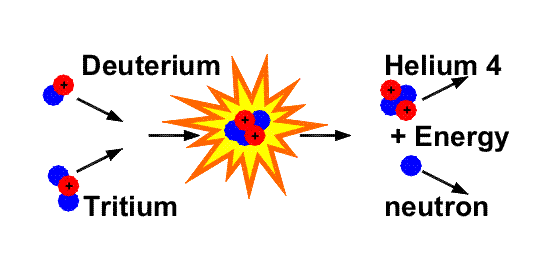The amount of energy released from one D-T reaction can be can be calculated using the mass-energy equivalence equation where E is in Joule, ∆m is the change in mass in kg, and c is the speed of light and that is a constant (299,792,458 m*s^-1):
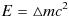The atomic mass unit of deuterium, tritium, helium-4 and a neutron are 2.01410178u, 3.0160492u, 4.00262u, and 1.008644u respectively. So the change in mass can be calculated by subtracting the initial mass with the final mass since some of the mass are converted into energy:
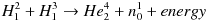 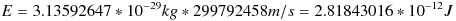Note that the change in mass we got above is in the atomic mass unit (AMU). But the mass in the mass-energy equivalence equation is defined as kg. Therefore, we will have to multiply the change in mass in AMU with 1.66054E-27 in order to convert that into kg:
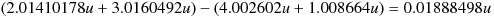Once we have all the information that we need, we may now substitute the appropriate numbers into the mass-energy equivalence equation:
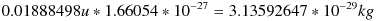2.81843016E-12 Joule may seem like a small amount of energy, however, this is just the energy released by the fusion of two atoms. Therefore, if we apply, for example, 100 kg of each hydrogen of isotopes as the fuel for the nuclear fusion reactor; then we will be able to create a tremendous amount of energy. But for now, in order to make things simple and processable, we may just assume that this nuclear reactor will continuously provide enough kinetic energy to boil the water inside the boiler which we will be getting into in the next section.
In order to capture the energy generated by the fusion reaction, we may consider using the method of a thermodynamic cycle. This should be a good option because a thermodynamic cycle is pretty straightforward. You basically heat up some fluid using the heat released from the fusion reaction to turn a turbine that is attached to a generator. And this situation can be modelled by the diagram shown below:
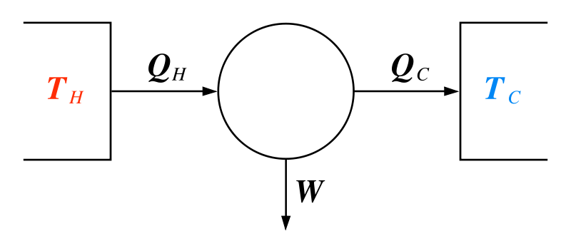Note that converting heat into work entirely is not possible in a cyclic system according to the Second Law of Thermodynamics. We can still assume that our generator has the efficiency of 99% just to make things simple. Anyway, here you go the schematic of our nuclear fusion power generator:
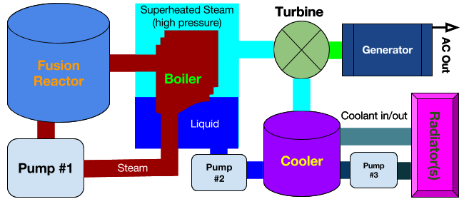Here you might be wondering how much energy the process of vapourisation for the fluid (H2O) in the boiler would require. Since the temperature in a moon crater is very cold, the water will freeze. However, since the steam tubes inside a boiler will be melting the water. Thus, we can assume that the temperature of the water is one degree above its melting point to make things simple. Furthermore, we want to turn the turbine with the superheated steam (high pressure), that is, heating the water to its critical point. The critical point for water is around 647.15 Kelvin. This problemo can be solved by applying the following two equations:
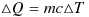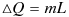
First of all , let us say that our boiler contains 48,400 litres of water and that is about 48,400 kg. We can then use the specific heat capacity of water to find the energy of require to heat up water from one degree celsius to its boiling point (100 degrees celsius):
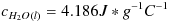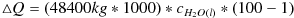
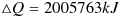
Once the water gets into the process of vapourisation, the amount of energy required for this process to complete can be calculated using the latent heat of vapourisation of water:
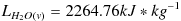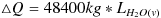
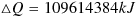
The amount of kinetic energy needed heating up the water inside the boiler to its critical point (374 degrees celsius) can be found by using the specific heat capacity of water vapour:
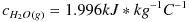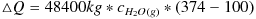
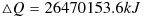
Finally, by finding the sum of the change in energy in each segment, we will be able to get the amount of energy required to heat up the water inside the boiler to the critical point:
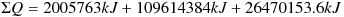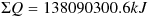
Energy Storage Module:
An energy storage module is a module that stores electricity and is designed to power up 20,000 500W digital computers for 24 hours in case of emergency. Furthermore, each energy storage module is consisted of 2667 Tesla Model S battery packs, each battery pack has the capacity for about 90 kWh. Theoretically, the capacity of each energy storage module is about 235 mWh with the efficiency of 99%.
The schematic of the connections between the power generation module, energy storage modules, and the computation module may look something like this:
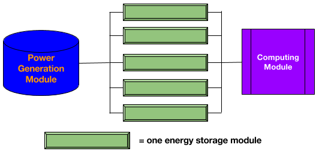Computing Module:
The computing module is a module that is made up of 100,000 digital computing machines, and each digital computing machine in the module runs at 500 kWh. Therefore, about five energy storage modules are needed in case of emergency. The specification of the entire computing module is not shown here because it can be vary depending the implementation.
Thermal Module:
The purpose of a thermal module in this computing centre is to cool down the entire system. Furthermore, since this computing centre will be built in a place that is very close to vacuum, methods to dispense heat such as convection and conduction would not work. Therefore, we could use radiation to dispense the heat out of the system. One thermal module is made up of many radiators and ammonia fluid will be pumped into the pipes of the radiators. Ammonia is chosen as the coolant instead of regular water because the melting point of ammonia is lower. In other words, the coolant would not freeze if it is too cool outside. This computing centre is surrounded by four thermal modules. The image below is an example of a radiator in space, the white panel in the centre part of the image is the radiator:
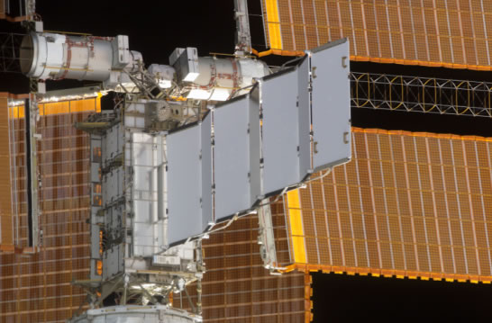Data Transmission Module and Black Box Abstraction:
Every large system is made of smaller parts and each smaller part can be divided into even smaller parts. Humans are able to create and manage complex systems because there are techniques for controlling the complexity the system. One of the techniques which the computer scientists like to use to suppress details is the technique of black box abstraction (e.g. defining symbols and "subroutines"). Black box abstraction is just a simple concept of taking some input, producing an output, without knowing the implementation of the "black box". I will be applying this technique to the data transmission module in order to make this project accessible and processable to a single individual.
"We can only see a short distance ahead, but we can see plenty there that needs to be done." - Alan M. Turing, Computing Machinery and Intelligence (1950)
|
The Site is Licensed Under the MIT License. |
|
|